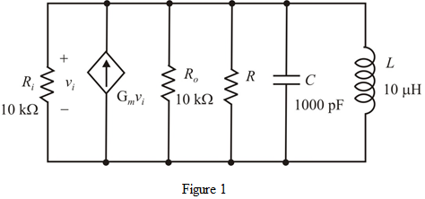

For the oscillator oscillations will occur at resonant frequency.
Write the expression for the resonant frequency of the LC resonator.
Substitute for  and for
and for  .
.
Thus, the circuit will oscillate at the frequency  .
.
Draw the oscillator circuit.

For the oscillator oscillations will occur at resonant frequency.
Write the expression for the resonant frequency of the LC resonator.
Substitute for and for .
Thus, the circuit will oscillate at the frequency .
Write the expression for the quality factor of the parallel RLC circuit.
Find the resistance  .
.
Write the expression for the transconductance from the circuit shown in Figure 1.
from the circuit shown in Figure 1.
Substitute  for
for  ,
,  for
for  and
and  for
for  .
.
Therefore, the value of  is.
is.